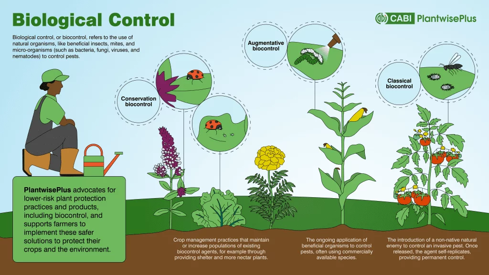
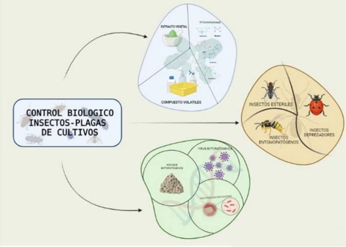
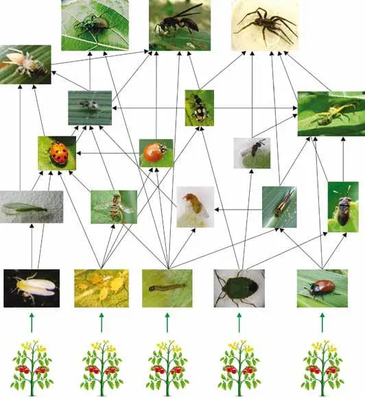
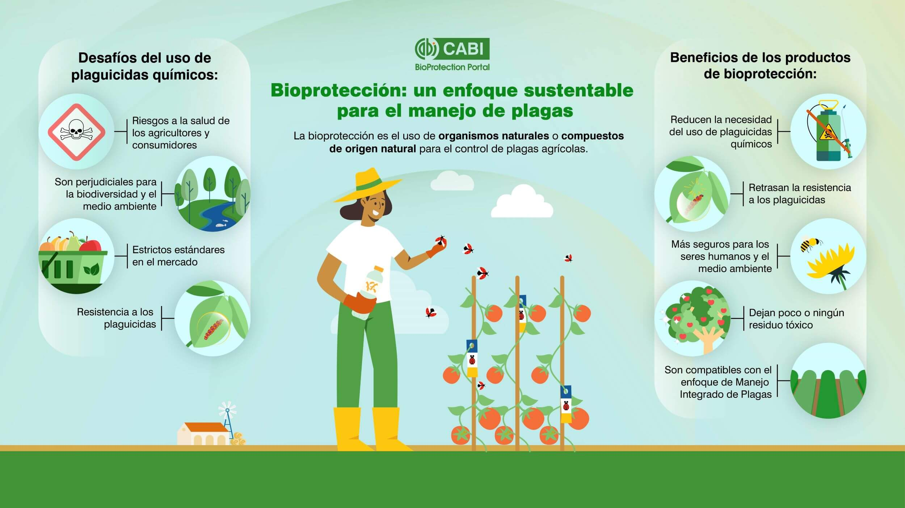
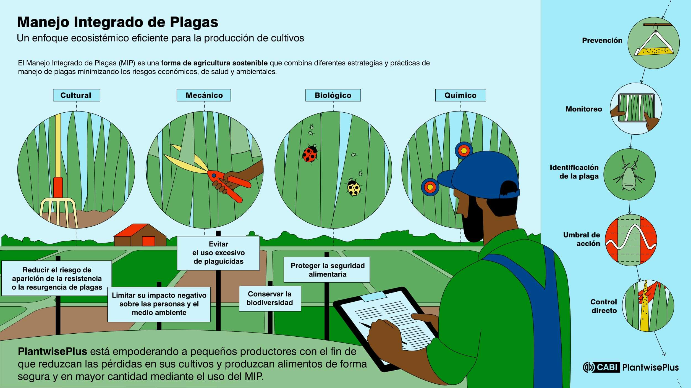
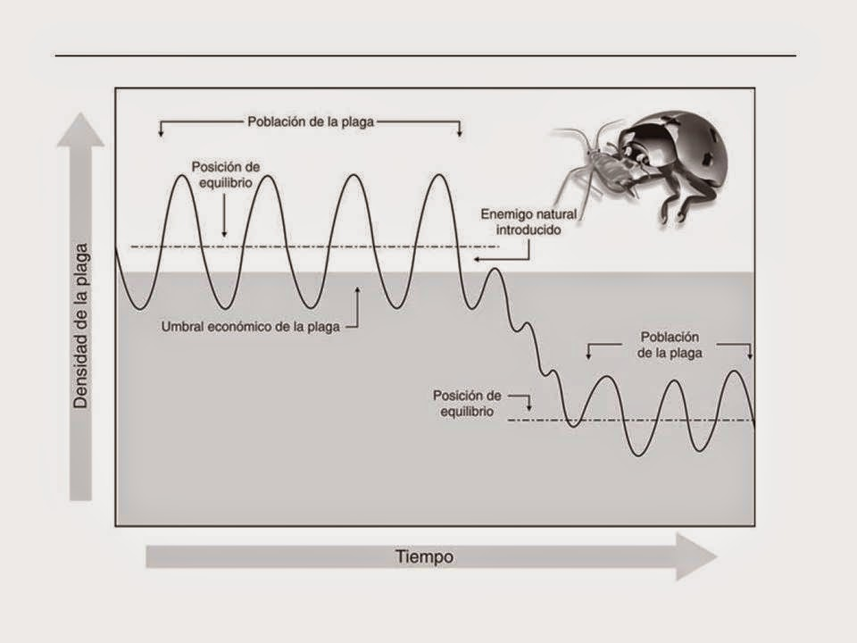

🐞 ¿Qué es el Control Biológico?
El control biológico es el uso de organismos vivos —llamados biocontroladores o enemigos naturales— para reducir poblaciones de plagas agrícolas, forestales o urbanas. Es una alternativa sostenible a los pesticidas químicos, que a menudo contaminan suelos, aguas y alimentos, además de generar resistencia en las plagas.
A diferencia de los agroquímicos, los biocontroladores son específicos (atacan solo la plaga objetivo), autopropagables (se reproducen solos) y seguros para humanos, animales beneficiosos y el ecosistema. Es una estrategia clave dentro del Manejo Integrado de Plagas (MIP).
🎯 Objetivos de Aprendizaje
Al finalizar este tema serás capaz de: definir control biológico y diferenciarlo del químico, identificar los tres tipos de biocontroladores (depredadores, parasitoides, patógenos), reconocer ejemplos de biocontrol exitoso en Venezuela y el mundo, y comprender las ventajas y limitaciones del control biológico.
🔄 Tipos de Control Biológico
Existen tres estrategias principales para implementar el control biológico, cada una con ventajas según el contexto agrícola y la plaga a combatir.

Figura 1: Los tres tipos de control biológico: conservación, aumentativo y clásico. Fuente: CABI PlantwisePlus.
Conservación
Proteger y fomentar los enemigos naturales ya presentes en el agroecosistema. Se logra mediante plantas refugio (flores que atraen polinizadores y depredadores), reducción de pesticidas de amplio espectro y mantenimiento de bordes de cultivos con vegetación nativa.
Aumentativo (Inundativo)
Liberar masivamente biocontroladores criados en laboratorio cuando aparece la plaga. Es como "contratar refuerzos" temporales. Ejemplo: liberar miles de crisopas en un cultivo de tomate infestado de pulgones.
Clásico (Introducción)
Importar un enemigo natural de otro país o región para controlar una plaga invasora. El biocontrolador se establece permanentemente y regula la plaga a largo plazo. Requiere estudios rigurosos para evitar que el introducido se convierta en plaga.
🦠 Agentes Biocontroladores
Los biocontroladores se clasifican en tres grupos según su modo de acción: depredadores (cazan y devoran), parasitoides (viven dentro o sobre la plaga, matándola), y patógenos (microorganismos que causan enfermedades).

Figura 2: Métodos de control biológico de insectos-plagas de cultivos. Fuente: Scielo México.

Figura 3: Red trófica de biocontroladores en agroecosistemas. Fuente: Rehagro.
🐞 Depredadores
Se alimentan de varias presas durante su vida. Son generalistas pero eficientes.
- Mariquitas (Coccinellidae): Devoran pulgones, cochinillas y ácaros. Una larva puede comer 400 pulgones en su desarrollo.
- Crisopas (Chrysopidae): Sus larvas se llaman "leones de áfidos". Atacan pulgones, trips y huevos de insectos.
- Arácnidos (Ácaros depredadores): Controlan plagas de ácaros fitófagos en cultivos de cítricos y berries.
- Avispas y escarabajos: Muchas especies son depredadores activos de orugas y larvas.
🪰 Parasitoides
Insectos que depositan huevos dentro o sobre la plaga. La larva se alimenta del huésped, matándolo.
- Avispas parasitoides (Trichogramma spp.): Parasitan huevos de polillas y mariposas. Se usan masivamente en maíz, caña y hortalizas.
- Avispas del género Copidosoma: Controlan la mosca blanca (Bemisia tabaci), plaga devastadora del tomate y pimentón.
- Moscas taquínidas: Parasitan orugas de lepidópteros. Son cruciales en control de gusanos cogolleros.
🦠 Patógenos Microbianos
Microorganismos que causan enfermedades letales en insectos plagas.
- Bacillus thuringiensis (Bt): Bacteria que produce toxinas cristalinas. Al ingerirla, las larvas de lepidópteros mueren en 2-5 días. Es el biocontrolador microbiano más usado mundialmente.
- Beauveria bassiana: Hongo entomopatógeno que infecta más de 200 especies de insectos. Produce esporas que germinan en la cutícula del insecto.
- Metarhizium anisopliae: Hongo que controla grillos, chapulines y escarabajos. Se usa en pastos tropicales.
- Virus Nucleopoliedricos (NPV): Virus específicos que causan epidemias en poblaciones de orugas.
⚖️ Ventajas y Limitaciones

Figura 4: Desafíos de los plaguicidas químicos y beneficios de la bioprotección. Fuente: CABI BioProtection Portal.
✅ Ventajas
- Específico: No daña polinizadores, depredadores ni humanos.
- Sin residuos tóxicos: Los alimentos son más seguros para consumo.
- Autopropagable: Se reproduce y persiste en el campo.
- Resistencia natural: Las plagas raramente desarrollan resistencia.
- Bajo costo a largo plazo: Una vez establecido, no requiere reaplicación constante.
- Compatible con MIP: Se integra con otras prácticas sostenibles.
❌ Limitaciones
- Lento inicialmente: No elimina la plaga de inmediato; requiere paciencia.
- Específico: Un biocontrolador no sirve para múltiples plagas.
- Dependiente del clima: La temperatura y humedad afectan su eficacia.
- Requiere conocimiento: El agricultor debe identificar correctamente plaga y enemigo natural.
- Riesgo de introducción: Especies importadas pueden afectar fauna nativa.
- Difícil de almacenar: Los organismos vivos requieren condiciones especiales.
🌾 Manejo Integrado de Plagas (MIP)
El MIP es una estrategia ecosistémica que combina control biológico, cultural, mecánico y químico selectivo para mantener las plagas por debajo de niveles económicamente dañinos. No busca erradicar la plaga, sino equilibrar el agroecosistema.

Figura 5: El MIP combina estrategias cultural, mecánica, biológica y química. Fuente: CABI PlantwisePlus.

Figura 6: Equilibrio poblacional entre plaga y enemigo natural. Fuente: Control Biológico UAGro.
| Estrategia | Ejemplos | Rol en MIP |
|---|---|---|
| Cultural | Rotación de cultivos, siembra de variedades resistentes, saneamiento de campos | Previene aparición de plagas |
| Mecánico | Trampas, barreras físicas, eliminación manual de insectos | Control directo en plagas bajas |
| Biológico | Liberación de enemigos naturales, conservación de flora beneficiosa | Regulación natural a largo plazo |
| Químico selectivo | Pesticidas de bajo impacto, aplicaciones puntuales en umbrales económicos | Último recurso, control de emergencia |
🇻🇪 Biocontrol en Venezuela
Venezuela cuenta con una enorme biodiversidad de enemigos naturales gracias a sus ecosistemas variados. Sin embargo, el uso de biocontroladores en agricultura aún es incipiente comparado con países como Brasil o México.
🌱 Casos y Potencial en Venezuela
Control de mosca blanca (Bemisia tabaci): Parasitoides como Encarsia formosa y Eretmocerus han mostrado eficacia en cultivos de tomate y pimentón en los Andes.
Control de cochinilla rosada (Dysmicoccus brevipes): La mariquita Cryptolaemus montrouzieri se usa en cultivos de piña en el oriente del país.
Bacillus thuringiensis (Bt): Aplicado en cultivos de repollo, coliflor y brócoli contra el gusano soldado (Spodoptera frugiperda) en los Llanos.
Control de escarabajos del plátano: Hongos entomopatógenos como Metarhizium en fase experimental en el eje platanero de Aragua.
Desafío: Falta de laboratorios de producción masiva, capacitación técnica y políticas de incentivo al agroecológico.
¿Sabías que...?
El primer caso de control biológico exitoso de la historia ocurrió en 1888 en California: la cochinilla de algodoncillo (Icerya purchasi) devastaba cítricos hasta que se importó la mariquita australiana Rodolia cardinalis. En 2 años, la plaga fue controlada. Este caso fundó la disciplina del control biológico moderno y se conoce como el "milagro de la coccinélida".
🤯 Datos Curiosos
¿Sabías que...?
Una sola mariquita adulta puede consumir hasta 5,000 pulgones en su vida. Si las pusieras en fila, sería una fila de más de 100 metros de insectos devorados por un bichito de 7 mm.
¿Sabías que...?
El hongo Ophiocordyceps unilateralis controla biológicamente a las hormigas... pero de una forma aterradora: infecta el cerebro de la hormiga, la obliga a trepar a una hoja, y luego brota un tallo fúngico desde su cabeza. Fue la inspiración para los "zombis" en ficción.
¿Sabías que...?
La mosca estéril es una técnica de control biológico donde se liberan millones de machos esterilizados por radiación. Compiten con machos salvajes por hembras; las hembras que se aparean con estériles no producen descendencia. Erradicó la mosca del ganado de EE.UU. y está erradicando la mosca de la fruta en zonas de América.